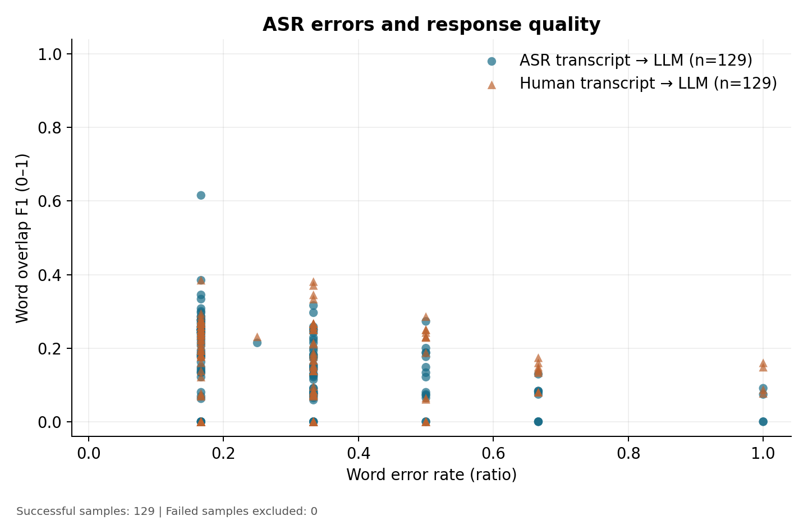
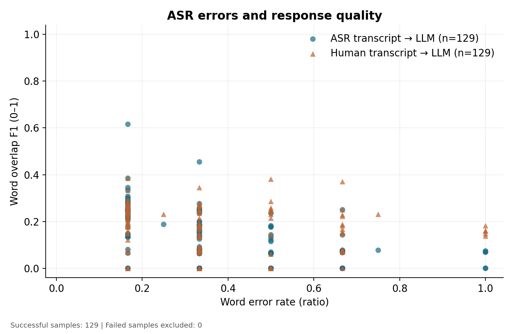
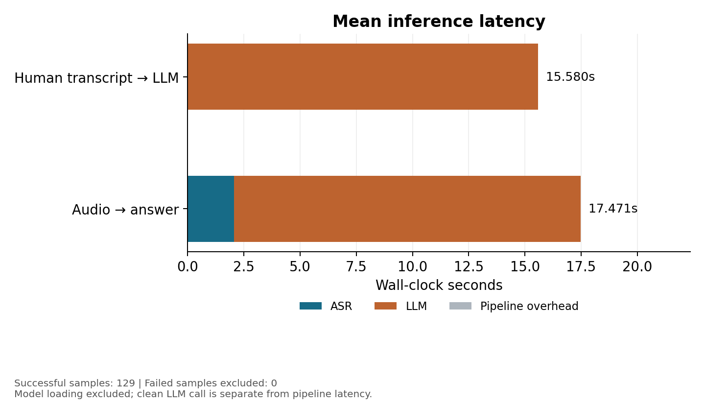
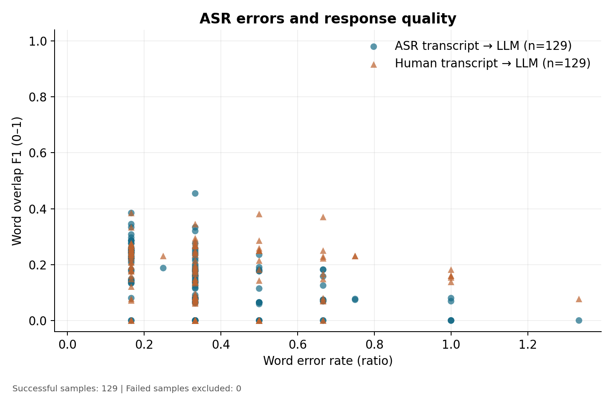

Results
Three real evaluation runs of 129 samples each, on a laptop GPU, with the models and metrics described in the previous pages. Every number here comes from the saved report.json files.
vasista22/whisper-telugu-small to Qwen2.5-1.5B-Instruct, fp16, greedy decoding, RTX 4060 Laptop, transformers 4.57.6. Conditions: Clean; Noisy (0 dB SNR, no denoising); Noisy+DN (same noisy audio, spectral-subtraction denoising on). 129 of 129 samples succeeded in every run.Main results
| Metric | Clean | Noisy | Noisy+DN |
|---|---|---|---|
| Corpus WER | 0.2928 | 0.3377 | 0.3391 |
| Corpus CER | 0.0745 | 0.0964 | 0.0992 |
| Pipeline RTF (corpus) | 4.154 | 4.993 | 4.948 |
| ASR-only RTF (corpus) | 0.501 | 0.587 | 0.579 |
| Mean ASR time (s) | 1.742 | 2.054 | 2.026 |
| Mean LLM time (s) | 12.712 | 15.417 | 15.285 |
| Mean total time (s) | 14.455 | 17.471 | 17.311 |
| Response F1, answer from ASR transcript | 0.1657 | 0.1548 | 0.1547 |
| Response F1, answer from human transcript | 0.1687 | 0.1687 | 0.1687 |
| Mean quality drop (human minus ASR) | 0.0031 | 0.0139 | 0.0141 |
| Samples degraded / improved by ASR errors | 52.7% / 37.2% | 55.0% / 34.9% | 56.6% / 34.9% |
| Exact-match rate (either arm) | 0 | 0 | 0 |
| Samples succeeded / failed | 129 / 0 | 129 / 0 | 129 / 0 |
The human-transcript F1 is the same in every column because it does not depend on audio: it is the same LLM answering the same ground-truth transcripts.
Distributions
| Metric | Statistic | Clean | Noisy | Noisy+DN |
|---|---|---|---|---|
| Per-sample WER | mean | 0.317 | 0.360 | 0.362 |
| p50 | 0.333 | 0.333 | 0.333 | |
| p95 | 0.667 | 0.667 | 0.750 | |
| Per-sample CER | mean | 0.079 | 0.105 | 0.106 |
| p50 | 0.053 | 0.083 | 0.077 | |
| p95 | 0.215 | 0.310 | 0.326 | |
| ASR time (s) | mean | 1.742 | 2.054 | 2.026 |
| p50 | 1.531 | 2.142 | 2.114 | |
| p95 | 2.581 | 2.705 | 2.605 | |
| LLM time (s) | mean | 12.712 | 15.417 | 15.285 |
| p50 | 10.893 | 15.763 | 15.608 | |
| p95 | 17.839 | 17.317 | 17.016 | |
| Total time (s) | mean | 14.455 | 17.471 | 17.311 |
| p50 | 12.122 | 17.675 | 17.436 | |
| p95 | 20.236 | 19.489 | 19.210 | |
| Per-sample RTF | mean | 4.252 | 5.190 | 5.146 |
| p50 | 4.425 | 4.969 | 4.962 | |
| p95 | 5.830 | 7.682 | 7.463 |
The per-sample WER median is a coarse 0.333 because the questions are short (a few words), so a single word error moves the rate in large steps. That is also why the WER-vs-quality scatter plots show vertical stripes.
Latency: where the time goes
- The ASR stage is real time: ASR-only RTF is 0.50 to 0.59, so it transcribes faster than the audio plays.
- The full pipeline is not: RTF is 4.15 to 4.99, because the LLM stage takes about 88% of pipeline time (12.71 of 14.45 s clean; 15.42 of 17.47 s noisy).
- Noisy runs are slower: mean LLM time rises by about 2.7 s. With greedy decoding on a fixed token budget this is consistent with noisier transcripts producing longer or different generations, not with any change to the LLM.
Correctness and hallucination
From the key-fact classifier, out of 129 answers per arm:
| Condition | Answer from | Correct | Abstained | Hallucinated | Hallucination rate |
|---|---|---|---|---|---|
| Clean | ASR transcript | 0 | 0 | 129 | 1.000 |
| Clean | human transcript | 3 | 0 | 126 | 0.977 |
| Noisy | ASR transcript | 0 | 0 | 129 | 1.000 |
| Noisy | human transcript | 3 | 0 | 126 | 0.977 |
| Noisy+DN | ASR transcript | 0 | 0 | 129 | 1.000 |
| Noisy+DN | human transcript | 3 | 0 | 126 | 0.977 |
This is a real capability limit of the smallest Qwen2.5 checkpoint on Telugu factual recall and instruction following in this setup. A larger LLM, ruled out here by GPU memory, would be the first remedy. The check is lexical, so the rate is an upper bound (see its limits).
Do the differences exceed noise?
95% paired bootstrap intervals (10,000 resamples over the 129 questions, paired by question):
| Comparison | Metric | Difference | 95% CI | Reading |
|---|---|---|---|---|
| Clean to Noisy | WER | +0.0449 | +0.0141 to +0.0769 | Real increase |
| Clean to Noisy | CER | +0.0219 | +0.0083 to +0.0364 | Real increase |
| Noisy to Noisy+DN | WER | +0.0014 | -0.0144 to +0.0174 | Indistinguishable from 0 |
| Noisy to Noisy+DN | CER | +0.0028 | -0.0041 to +0.0099 | Indistinguishable from 0 |
Noise genuinely hurts recognition (the interval excludes zero even though the clean and noisy renderings differ). Denoising does not measurably change it. See the extension page.
Plots
Each condition has a WER-vs-quality scatter (ASR-transcript and human-transcript series share the same WER x-value per sample) and a stacked latency bar. WER is a ratio and is not clipped at 1.




What the results establish
| Claim | Evidence |
|---|---|
| The pipeline works end to end on 129 Telugu utterances | 129/129 succeeded in all three runs |
| Telugu ASR is usable but imperfect on clean synthetic speech | WER 0.293, CER 0.075 |
| Noise measurably hurts ASR | WER +0.045, CI excludes 0 |
| Spectral-subtraction denoising does not fix it | WER +0.001, CI -0.014 to +0.017 |
| The LLM, not ASR, limits answer quality | 0/129 correct from speech, 3/129 from perfect transcripts, 0 abstentions |
| The cascade is not real time end to end here | RTF 4.15 to 4.99; LLM about 88% of time |
What they do not establish is covered on Limitations: synthetic speech, small models, a lexical quality proxy, and a single deterministic run per condition.